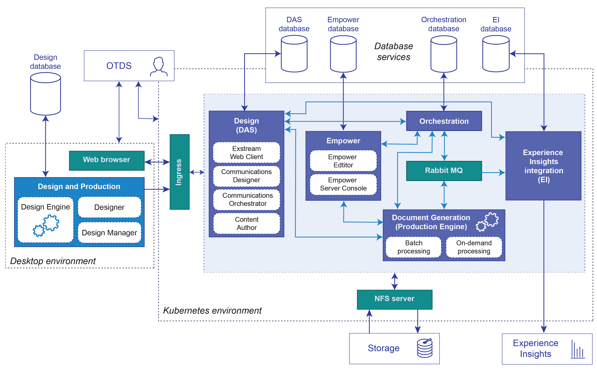

Overview of the Exstream environment
Exstream CE lets you combine classic Exstream software (Design and Production) with a containerized Exstream deployment to provide robust capabilities for designing, managing, and delivering customer communications using the Exstream production engine.
The following graphic provides a representation of the components that are included in a typical Exstream environment in this release:

The way your organization installs and implements the components of the Exstream deployment depends on your specific business requirements.
Design and Production
Design and Production is a central component of any Exstream implementation and provides a desktop design environment for creating customer communications that are produced using the Exstream production engine:
-
Designer—Provides the graphic design interface for creating the design layouts for Design Manager applications. Designers use this interface to design and format content for pages and messages, create graphic elements, insert variables to customize documents, and put together the overall look and feel for customer communications.
-
Design Manager—Lets users create and manage the design objects that make up a Design Manager application, including design templates, data files, variables, output, output queues, and the production equipment used by the Exstream engine to produce customer output. Additionally, system administrators use Design Manager to perform administration tasks, such as managing users and design groups and defining design components.
- Design engine—Lets users produce output and test their applications in the desktop environment. The design engine is also called the test engine.
- Design database—Contains Design and Production design objects. This database is specific to Design and Production and cannot be used to store resources for other components in the containerized Exstream deployment.
Exstream deployment components
The Exstream deployment includes the following specific components to facilitate the end-to-end functionality for creating and delivering customer communications:
-
Design—Provides the environment for users to design and modify communications and manage the production of customer output. Access to the service is controlled using a role-based permission system that uses OTDS authentication. The Design service is also called Dynamic Asset Service or DAS.
The Exstream web client is the central user interface for interacting with DAS. The web client lets users define tenants in their Exstream services, upload Exstream engines, manage access permissions for users and domains, configure engine run definitions for communication previews, and manage resources in their DAS asset library. From the web client, users can also access the following web applications:
-
Communications Designer lets users design communications in an intuitive web-based design environment. Users can leverage data files and output queues created in Design and Production to create customer output from communications that are designed in Communications Designer.
-
Communications Orchestrator lets users create flow models and flow contexts that are used to define engine orchestration jobs for running the Exstream production engine to produce customer output.
-
Content Author lets business users add content to designs that are created in Design and Production or Communications Designer without requiring them to re-package their applications. Content Author communications can be fulfilled directly to produce customer output.
-
-
Orchestration—Processes the engine orchestration jobs which are configured in Communications Orchestrator. The service supports both on-demand (synchronous) and batch (asynchronous) processing of orchestration flows.
The Orchestration service communicates with Document Generation to run the Exstream engine using different REST endpoints to invoke the on-demand or batch service as needed. Orchestration jobs that are triggered using the on-demand REST endpoint use the Document Generation on-demand service for processing. All other orchestration jobs invoke orchestration flows in batch mode, queuing the requests in an internal Rabbit messaging queue.
-
Document Generation—Manages running the Exstream engine, and includes the on-demand and batch services for handling synchronous and asynchronous engine processing respectively. Communication preview requests from the web client always use the on-demand service for processing.
The processing method used when the engine run is initiated as part of an orchestration job depends on the how the job was initiated. Results from on-demand engine runs are returned in a REST response for either immediate display as a preview or for further processing as defined in the corresponding orchestration flows. Results from batch engine runs are asynchronously returned using the Rabbit queue to the Orchestration service for further flow processing.
-
Empower—Provides the environment for users to modify fully composed interactive documents that are generated from communications created in Design and Production, Communications Designer, and Content Author. This component includes the API that handles communication between Empower backend resources and the Empower Editor and Empower Server Console user-facing interfaces for Empower.
-
Empower Editor is the browser-based interactive editor lets end users interact with customer communications, making selections from predefined options, changing text and images, updating variable data, adding additional documents and recipients, previewing the communications, and then initiating the fulfillment process for their updated communication.
- Empower Server Console is the browser-based administrative interface for Empower that lets administrators view and manage Empower applications, documents, and editors, and configure system settings.
-
-
Experience Insights integration—Manages sending event data for Exstream communications to OpenText Core Experience Insights (CXI), which allows organizations to map customer journeys and track customer activity for every event, across all customer journey touchpoints. When Experience Insights integration is enabled, event data from Exstream is sent to Core Experience Insights at regular intervals.
-
Rationalization—In addition to the other components in a typical Exstream environment, Exstream CE includes an optional Rationalization component. Rationalization provides the environment for users to import external PDFs and rationalize them to use the content from those PDFs in Communications Designer communications.
Note: Licensing for Exstream CE Rationalization requires a services engagement with OpenText Professional Services. For more information, contact your Exstream account representative.
Database services
The database services provide central access to and storage for the resources that are used in the Exstream deployment in the Kubernetes environment. Resources for each Exstream component are stored in component-specific databases:
- Design database—Stores design and production resources that are configured in the Design service.
- Orchestration database—Stores production artifacts that are generated during Exstream engine runs.
- Empower database—Stores Empower-specific resources.
- Experience Insights database—Stores the event data that will be sent to Core Experience Insights.
This separation of resources can be through schemas in a single database, or through separate databases. The actual physical implementation for your environment will depend on your business needs.
OpenText Directory Services
OpenText Directory Services, is an OpenText identity management system that provides access control for the Exstream environment. OTDS can synchronize with external identity providers like Microsoft Active Directory to retrieve user and group information, and map that information to OTDS access roles, providing secure access to each platform component. OTDS can be downloaded from My Support and is installed separately from the Exstream deployment. Depending on your specific business needs, you can choose to install OTDS on an application server or in the Kubernetes environment.
External components
Setting up the containerized Exstream deployment also requires the following components:
-
Kubernetes—Provides a clustered environment that facilitates deployment, communication, and scaling for the services in the Exstream deployment.
-
Docker—Provides the platform as a service framework for the Exstream deployment. Exstream components are provided for deployment as Docker images.
-
Helm—Serves as a package manager for Kubernetes. Exstream uses Helm charts to configure its deployment.
-
Ingress controller—Provides external access to the Exstream deployment in Kubernetes and acts as a gateway for external clients to interact with Exstream microservices.
-
RabbitMQ—Enables the asynchronous processing of batch orchestration jobs. RabbitMQ is a messaging service that is required for engine orchestration.
-
NFS server provisioner—Provides access to shared storage for the resources that are used and generated by the Orchestration and DocGen services.